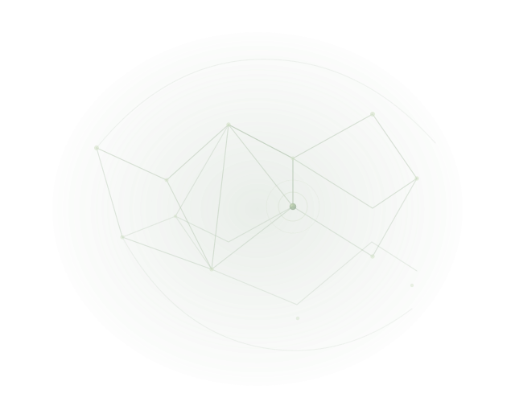

IT SUPPORT · NETWORKING · CLOUD · CYBERSECURITY WIGGINS, MS
Curious by nature.
Building what’s next.
Hi, I’m Olivia — a Networking Technology and Cloud Computing student, cybersecurity assessment intern, and hands-on learner.
Networking, cloud, and cybersecurity
WHERE IT LEADS

A quick map
of my world.
One home base for my story, hands-on learning, projects, and next steps.
About me
What I’m learning, what I care about, and how I approach the work.
↗ 02 / EXPERIENCEExperience
Supervised cybersecurity assessment work through MGCCC’s ITACC, plus earlier customer-facing work.
↗ 03 / HANDS-ONNetworking & IT labs
Packet Tracer, Cisco IOS, VLANs, IPv4, and practical troubleshooting.
↗ 04 / CREDENTIALSCerts & badges
Current training, certification prep, and my public Credly wallet.
↗ 05 / EDUCATIONEducation
My studies, technical training, and STEM scholarship college life.
↗ 06 / BUILT & LEARNED✣Projects
Small builds and labs that help me learn by making.
↗ 07 / CLOUD☁Cloud computing
AWS and Azure learning, alongside systems and virtualization work.
↗ 08 / SAY HELLOContact
Have a question, opportunity, or useful thing to share?
↗A ONE-PAGE SNAPSHOT
Want the résumé version?
LET’S CONNECT